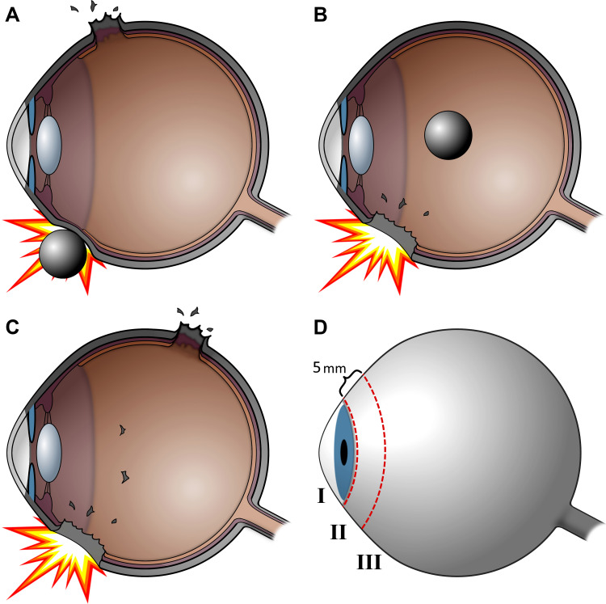
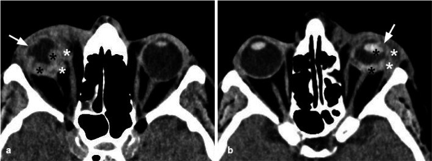
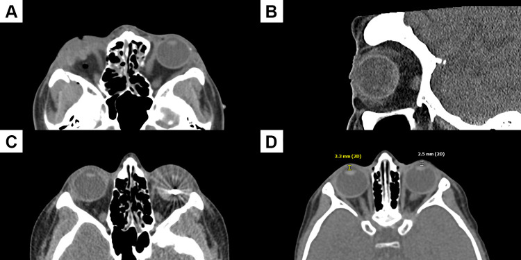
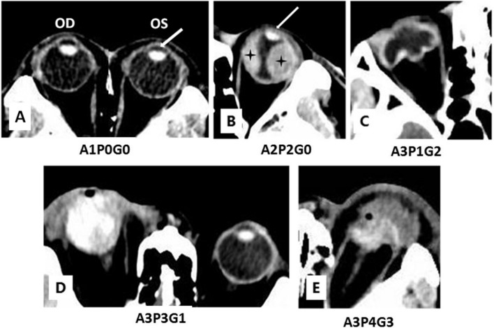
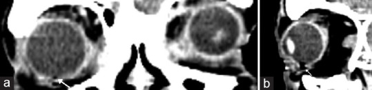
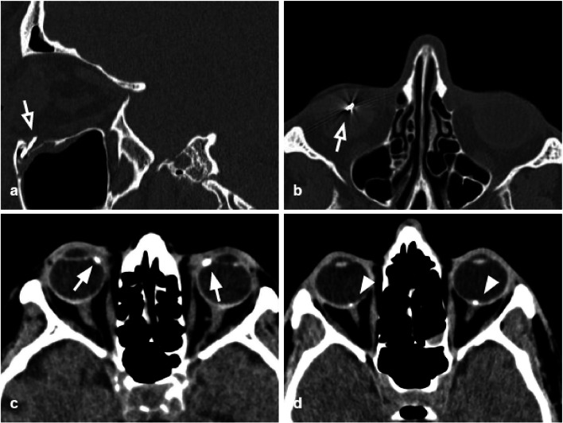
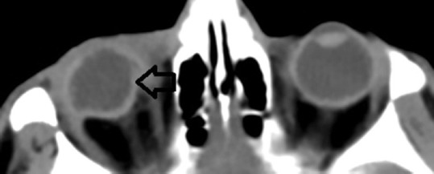

449 — Chấn thương hở nhãn cầu trên CT: BETT, 5 dấu chốt, thang điểm CT 0–10 & OTS / Open globe injury on CT
Tags: pattern:vo-nhan-cau pattern:mat-the-tich pattern:be-cung-mac-gian-doan pattern:khi-noi-nhan pattern:di-vat-noi-nhan pattern:xuat-huyet-dich-kinh pattern:tien-phong-bat-doi-xung pattern:chan-thuong-mat vung:mat vung:nhan-cau-hoc-mat vung:hoc-mat protocol:CT-hoc-mat-1mm protocol:MPR score:OTS score:CT-OGI incidentaloma:khong
Mức chắc chắn (certainty): tổng hợp y văn (literature synthesis) — dựng từ 1 tổng quan hệ thống + phân tích gộp 9 nghiên cứu/917 mắt (J Med Life 2025, PMC11891614, CC BY 4.0), 1 hồi cứu 1.120 mắt dựng thang điểm CT 0–10 (BMC Ophthalmol 2024, PMC10759343, CC BY 4.0), 1 nghiên cứu 190 nhãn cầu đối chiếu mổ (Saudi J Ophthalmol 2025, PMC12240278, CC BY-NC-SA 4.0), 1 phân tích 200 bệnh nhân về giá trị tiên lượng (J Ophthalmol 2022, PMC9458393, CC BY 4.0), 2 bài tổng quan về phân loại BETT + xử trí (Clin Ophthalmol 2022, PMC9379121, CC BY-NC 4.0; Eye (Lond) 2024, PMC11543839, CC BY 4.0) và 1 pictorial essay CT hốc mắt chấn thương (Insights Imaging 2022, PMC8755868, CC BY 4.0). Nhóm không có bệnh nhân của mình; chỗ chưa đủ chắc ghi "chưa rõ". Không ghi tên tác giả — attribution dùng tạp chí + năm + PMCID.
Câu chốt: CT rất đặc hiệu nhưng không nhạy: gộp 917 mắt cho độ nhạy 77% (KTC 95% 72–81) và độ đặc hiệu 94% (92–96), AUC 0,91 (PMC11891614). Ba con số phải thuộc: (1) "mất thể tích + bờ củng mạc gián đoạn" và "xuất huyết dịch kính" đặc hiệu > 98% cho chấn thương hở (PMC9379121); (2) 20% ca vỡ nhãn cầu chỉ có một dấu trên CT (11/54, PMC12240278) — nên CT âm tính không loại trừ; (3) thang CT 0–10: điểm 0 → 89,7% đạt thị lực ≥ 0,3; điểm 10 → 64,5% phải múc nội nhãn (PMC10759343). Cạm bẫy hay gặp nhất: khí nội nhãn giả (khí do phẫu thuật/bơm gas) và dị vật nằm trên mặt nhãn cầu bị đọc thành xuyên nhãn cầu.
1. Tổng quan bệnh học – cơ chế hình ảnh
1.1 Thành mắt mỏng 0,3 mm: vì sao chỗ vỡ hay nằm sau chỗ bám cơ trực
Vỏ mắt (eyewall) = giác mạc + củng mạc — theo BETT, chấn thương hở (open globe) là khiếm khuyết toàn bộ chiều dày vỏ mắt, bất kể cơ chế. Củng mạc dày không đều: dày nhất quanh thị thần kinh, mỏng nhất chỉ ~0,3 mm ngay sau chỗ bám cơ trực; các điểm yếu khác là rìa giác mạc (limbus), quanh lỗ thị và vết mổ cũ (PMC9379121). Vì thế:
- Vỡ (rupture) do vật tù đập (bóng, nắm đấm, chấn thương thể thao): nhãn áp vọt lên rồi vỡ từ trong ra (inside-out) ở điểm yếu nhất — thường sau chỗ bám cơ trực, nơi không nhìn thấy khi khám bàn ngoài.
- Rách (laceration) do vật sắc/đạn xuyên từ ngoài vào (outside-in); nếu có một đường vào, không có đường ra = xuyên (penetrating); có cả đường vào và đường ra = xuyên thủng (perforating); có dị vật nội nhãn (IOFB) là thể riêng (Hình 1, sơ đồ BETT).
1.2 TẠI SAO nhãn cầu "xẹp" — cơ học của một quả cầu đầy dịch
Nhãn cầu là quả cầu kín ~6,5 mL, áp suất 10–21 mmHg; vỏ mắt chỉ giữ hình nhờ áp lực trong lòng. Khi có lỗ toàn chiều dày:
- Dịch thoát — tiền phòng (0,25 mL) qua vết giác mạc, dịch kính (4 mL) qua vết củng mạc sau.
- Áp lực trong giảm → củng mạc trùng lại, bờ gãy góc, mép vết rách hở → hình "lốp xẹp" (flat tire) hoặc "mũ nấm" (mushroom sign) khi dịch kính bị đẩy ra sau mí.
- Thể tích giảm là dấu mạnh nhất và bất đối xứng — luôn so với mắt bên kia trên cùng lát cắt.
Tiền phòng (ACD) dịch chuyển theo vị trí vết rách — đây là logic định vị mà ít bài nhắc:
| Vị trí vết rách | Cơ chế | Tiền phòng trên CT |
|---|---|---|
| Trước (giác mạc, rìa) | Thoát thủy dịch | Nông — ví dụ 2,5 mm so với 3,3 mm ở mắt lành (PMC9379121) |
| Sau (củng mạc sau xích đạo) | Mất dịch kính, màng mống–thể thủy tinh bị kéo ra sau | Sâu bất thường |
| Rách nhỏ, tự bít | Không đổi thể tích | ACD có thể bình thường — bẫy |
1.3 TẠI SAO trông sáng/tối như vậy (vật lý HU)
- Dịch kính bình thường ≈ 0–20 HU, gần như đồng nhất hai bên.
- Máu cấp 50–70 HU (cục máu đông cao hơn): xuất huyết dịch kính làm dịch kính tăng đậm độ, có khi lắng thành lớp ở phía thấp → trông như "củng mạc dày" (PMC9379121).
- Khí −1.000 HU: đốm đen tuyệt đối trong nhãn cầu = khí nội nhãn — dấu đặc hiệu cao nhưng không độc quyền cho vỡ (xem mục 5).
- Kim loại > 1.000 HU + giả ảnh tia (streak/beam-hardening): dị vật kim loại; gỗ/kính thấu quang thường không thấy.
- Dầu silicone > 100 HU sau mổ bong võng mạc: bắt chước máu — đây là lý do phải hỏi tiền sử mổ (PMC8755868).
- Vôi hóa > 100 HU: mảng củng mạc (scleral plaque) ở người già bắt chước IOFB (PMC9379121).
1.4 Ngưỡng định lượng nằm lòng
| Chỉ số | Ngưỡng / giá trị | Nguồn |
|---|---|---|
| Độ dày củng mạc mỏng nhất | ~0,3 mm sau chỗ bám cơ trực | PMC9379121 |
| Phân vùng tổn thương | Zone I giác mạc–limbus; Zone II ≤ 5 mm sau limbus; Zone III > 5 mm sau limbus | PMC11543839 |
| Độ nhạy / đặc hiệu CT (gộp) | 77% (72–81) / 94% (92–96); AUC 0,91; 9 nghiên cứu, 917 mắt | PMC11891614 |
| Sens / spec / PPV / NPV / accuracy (1 trung tâm) | 71,3% / 98,5% / 83,6% / 95,75% / 94,9% (54 vỡ / 190 mắt) | PMC12240278 |
| Ca chỉ có 1 dấu CT | 11/54 = 20% | PMC12240278 |
| Đặc hiệu của bờ nhãn cầu biến dạng và xuất huyết dịch kính | > 98% | PMC9379121 |
| Thang CT tổng | 0–10 (A 0–3 + P 0–4 + G 0–3) | PMC10759343 |
| Tương quan thang CT | với chiều dài vết rách r = 0,798; với thị lực cuối r = 0,799 | PMC10759343 |
| Cửa sổ khâu chính | 12–24 giờ đầu | PMC9379121 |
| Viêm nội nhãn sau chấn thương hở | tới 16,5% | PMC11543839 |
| Cắt dịch kính sớm giảm PVR | trong 4–7 ngày đầu | PMC11543839 |
| Hệ quả nặng | viêm nội nhãn, viêm màng não, áp-xe não (nhất là IOFB hữu cơ) | PMC12240278 |
2. Mẫu hình + chẩn đoán phân biệt theo BETT & theo vùng
2.1 Sơ đồ phân loại BETT — chìa khóa để không gọi sai tên

BETT bằng hình cắt dọc: (A) vỡ (rupture) — lực tù, vỡ từ trong ra; (B) xuyên (penetrating) — một đường vào + dị vật; (C) xuyên thủng (perforating) — có đường vào và đường ra; (D) phân vùng I–III tính từ limbus, mốc 5 mm. Nguồn: Clin Ophthalmol 2022 (PMC9379121), CC BY-NC 4.0, nguyên bản.2.2 Gamut theo cơ chế (BETT) — mỗi thể có dấu CT riêng
- Vỡ (rupture, lực tù): mất thể tích + bờ củng mạc gãy góc + tiền phòng nông; hay kèm gãy xương hốc mắt (10% trong loạt 190 mắt — thành trong 63%, sàn 37%).
- Rách xuyên (penetrating): đường vào rõ, có thể khí nội nhãn, mảnh kim loại; nếu vật sắc nhỏ (gỗ, kính) → CT âm tính.
- Xuyên thủng (perforating): hai lỗ — dấu gián tiếp là đường hầm khí/dị vật xuyên qua nhãn cầu, tiên lượng xấu nhất.
- IOFB: nốt > 1.000 HU + giả ảnh tia; 82% là kim loại/từ tính (nhóm 39 ca mổ), khối lượng trung bình 20,49 mg, 4,02 × 1,40 × 0,93 mm; nguyên nhân đầu đục/đe kim 56,4% (PMC13197236).
- Chấn thương kín (closed globe): không có dấu xuyên thủng nhưng có thể xuất huyết tiền phòng, trật thủy tinh thể, phù cơ trực — không đồng nghĩa lành.
2.3 Gamut theo vùng (Zone I–III) — vùng càng sau càng xấu
- Zone I (giác mạc–limbus): sẹo giác mạc trục thị giác, tiền phòng nông; nguy cơ mất thủy dịch và tổn thương thể thủy tinh.
- Zone II (≤ 5 mm sau limbus): vùng thể mi–đáy dịch kính, dễ bong thể mi, hạ áp kéo dài (nối bài 1484).
- Zone III (> 5 mm, tới hậu cực): tổn thương võng mạc, IOFB võng mạc, tiên lượng xấu nhất; IGATES xác định Zone IIIb (sau xích đạo) tiên lượng xấu nhất (PMC11543839).
3. Bảng so sánh phân biệt (ma trận đối chiếu)
| Thực thể (entity) | Hình ảnh điển hình | Chốt vào (rule-in) | Chốt loại (rule-out) | Gợi ý xác nhận |
|---|---|---|---|---|
| Vỡ nhãn cầu (rupture) | Nhãn cầu mất thể tích, bờ gãy góc/gián đoạn, tiền phòng nông hơn mắt lành | Mất thể tích + bờ củng mạc không liên tục (đặc hiệu > 98%) | Nhãn cầu tròn đều, đối xứng, dịch kính trong → không loại trừ nếu rách nhỏ | Khám dưới kính hiển vi + mổ thăm dò |
| Rách xuyên (penetrating) | Đường vào + khí nội nhãn + xuất huyết dịch kính khu trú | Khí nội nhãn + đường vào | Khí đối xứng/ở đáy sau bơm gas → giả | Hỏi tiền sử mổ 4–8 tuần |
| IOFB kim loại | Nốt > 1.000 HU + giả ảnh tia | Tăng đậm độ + tia + tiền sử đập kim | Mảng củng mạc vôi hóa đối xứng hai bên, không tia | CT cửa sổ xương + cắt dịch kính gắp |
| IOFB gỗ/kính | Thấu quang, có thể chỉ thấy khí/đường vào | Đường vào + khí + không thấy kim loại | Không có đường vào, không khí → khả năng thấp | Hỏi vật liệu; siêu âm bồn nước nếu an toàn |
| Chấn thương kín (contusion) | Xuất huyết tiền phòng, trật thủy tinh thể, nhãn cầu còn thể tích | Nhãn cầu đủ thể tích + XH tiền phòng | Bờ gián đoạn + mất thể tích → đã hở | Khám + CT để loại hở |
| Khí do phẫu thuật / bơm gas | Bóng khí tròn ở đỉnh nhãn cầu, bệnh nhân tỉnh, không chấn thương | Tiền sử mổ bong võng mạc < 8 tuần | Khí + mất thể tích/bờ gián đoạn → khí do chấn thương | So phim cũ, hỏi tiền sử |
| Dầu silicone | Dịch kính tăng đậm độ toàn bộ, > 100 HU, bờ nhãn cầu nguyên | Tiền sử mổ bong võng mạc + bờ nguyên | Tăng đậm độ khu trú/lắng lớp → máu | Hỏi tiền sử; so mắt bên kia |

*CT ngang cửa sổ mô mềm, hai bệnh nhân: nhãn cầu méo, mất thể tích (a nặng hơn b), bờ củng mạc gián đoạn (dấu ) — nơi vỏ mắt hở, mặt trước nhãn cầu dẹt (mũi tên), xuất huyết dịch kính tăng đậm độ không đều (dấu * đen). Nguồn: Insights Imaging 2022 (PMC8755868), CC BY 4.0, nguyên bản.Bốn dấu CT kinh điển trên một hình — dùng để dạy đọc:

(A) "Mũ nấm" (mushroom sign) + khí trong nón cơ; (B) xuất huyết dịch kính lắng lớp ở phía thấp; (C) IOFB kim loại với giả ảnh tia; (D) tiền phòng nông: mắt phải 3,3 mm, mắt trái 2,5 mm. Nguồn: Clin Ophthalmol 2022 (PMC9379121), CC BY-NC 4.0, nguyên bản.4. Protocol chụp + hệ phân độ/điểm chuẩn hóa
4.1 Protocol
- CT hốc mắt không cản quang, lát ≤ 1 mm, axial + tái tạo coronal/sagittal (MPR) — độ dày hợp lý 1–2 mm; cửa sổ mô mềm + cửa sổ xương (PMC9458393, PMC12240278). Đây là điểm chết người: CT sọ thường quy 10 mm trong chấn thương đa chấn thương bỏ sót phần lớn dấu nhãn cầu — phải xin đúng protocol hốc mắt.
- Không cản quang là đủ: cản quang không giúp thấy vết rách, còn giả ảnh kim loại thì tăng.
- Trước khi chụp: che chắn (shield), KHÔNG đè ép, KHÔNG đo nhãn áp, KHÔNG siêu âm thường quy — đè lên nhãn cầu vỡ làm thoát nội nhãn; siêu âm chỉ dùng kỹ thuật bồn nước/găng nước khi đã cân nhắc và không đè (PMC9379121, PMC13518040).
- MRI: chống chỉ định khi chưa loại dị vật kim loại/từ tính — từ trường làm dị vật di chuyển, rách thêm võng mạc (PMC12240278).
- Đọc hệ thống 5 dấu: (1) hình dạng–thể tích nhãn cầu, (2) bờ củng mạc, (3) đậm độ dịch kính, (4) khí/dị vật nội nhãn, (5) độ sâu tiền phòng so mắt bên kia; cộng thêm xương hốc mắt, cơ trực, dây thị giác.
4.2 Thang điểm CT chấn thương hở nhãn cầu 0–10 (A + P + G)
Thang dựng trên 1.120 mắt (PMC10759343), chia 3 trục: A = đoạn trước, P = đoạn sau, G = hình dạng–thể tích.
| Điểm | A — đoạn trước | P — đoạn sau | G — hình dạng/thể tích |
|---|---|---|---|
| 0 | Bình thường | Bình thường | Bình thường |
| 1 | ACD lệch nhẹ, đậm độ bất thường trong tiền phòng | Bọt khí/ổ tăng đậm độ < 1/3 dịch kính | Bờ hơi không đều, thể tích ≥ 4/5 |
| 2 | Khí, ACD lệch rõ, thủy tinh thể lệch | Tăng đậm độ 1/3–4/5 dịch kính | Bờ không đều vừa, thể tích 1/3–4/5 |
| 3 | Tiền phòng dẹt, biến dạng bờ, mất/thoát thủy tinh thể | Tăng đậm độ ≥ 4/5 dịch kính | Biến dạng, thể tích ≤ 1/3 |
| 4 | — | Cấu trúc đảo lộn, đậm độ không đồng nhất toàn dịch kính | — |
Cách dùng trong thực hành: cộng A + P + G (0–10); ghi kèm thang OTS (OTS cần thị lực đầu vào — CT không thay được OTS, nhưng thang CT bổ sung tiên lượng khi bệnh nhân không đo được thị lực).

Năm mức tăng dần: A1P0G0 (ACD lệch nhẹ) → A2P2G0 (khí + thủy tinh thể lệch) → A3P1G2 → A3P3G1 → A3P4G3 (cấu trúc đảo lộn, thể tích ≤ 1/3). Nguồn: BMC Ophthalmol 2024 (PMC10759343), CC BY 4.0, nguyên bản.flowchart TD
A[Chan thuong mat nghi vo nhan cau] --> B[Che chan - KHONG de ep - KHONG do nhan ap - KHONG sieu am thuong quy]
B --> C[CT hoc mat khong can quang lat 1-2 mm + MPR coronal/sagittal]
C --> D{Dau CT: the tich - bo cung mac - dam do dich kinh - khi/di vat - ACD}
D -->|Co bat ky dau| E[Chan thuong HO: hoi chan kham mat + khang sinh + uon van + khau 12-24 gio]
D -->|Khong co dau| F{Co yeu to lam sang? danh gia kho - khong hop tac - vet thuong truoc}
F -->|Co| G[Khong loai tru - van hoi chan - kham duoi kinh hien vi/tham do]
F -->|Khong| H[Theo doi + kham lai]
E --> I{IOFB kim loai?}
I -->|Co| J[CAM MRI - cat dich kinh gap + khang sinh noi nhan]
I -->|Khong| K[Tinh thang CT A+P+G va OTS de tien luong]
4.3 Xử trí cấp (điều phối với nhãn khoa)
- Khâu chính trong 12–24 giờ — chậm làm tăng viêm nội nhãn và xuất huyết hắc mạc (PMC9379121).
- Kháng sinh toàn thân (cephalosporin thế hệ 3, ví dụ ceftazidime 50 mg/kg, tối đa 2 g) + uốn ván; IOFB hữu cơ/đất → cân nhắc kháng nấm (PMC9379121).
- Cắt dịch kính trong 4–7 ngày làm giảm PVR sau chấn thương; không có thuốc nào thay thế (PMC11543839).
- Tư vấn tiên lượng bằng số: điểm CT 0 → 89,7% thị lực ≥ 0,3; điểm 10 → 64,5% múc nội nhãn (PMC10759343); nhãn cầu xẹp/đảo lộn trên CT làm HR 47,72 (6,13–371,62) cho thị lực xấu, tổn thương ống thị giác/dây thị giác HR 21,62 (4,73–98,78) (PMC9458393).
5. Biến thể bình thường và cạm bẫy
- Khí nội nhãn "giả" sau mổ: bơm C3F8/SF6 để lại bóng khí 4–8 tuần, tròn, ở đỉnh nhãn cầu, bờ nhãn cầu nguyên — đọc thành vỡ nhãn cầu là mổ oan. Hình dưới là ca dương tính giả đã được mổ kiểm chứng: không có vỡ.
- Dị vật "trong" nhãn cầu thực ra nằm trên mặt củng mạc: trên một bình diện không phân biệt được trong hay ngoài — phải xem đủ 3 bình diện và cửa sổ xương; loạt 190 mắt có ≥ 2 ca dương tính giả kiểu này (PMC12240278).
- Mảng củng mạc vôi hóa (người > 60 tuổi, đối xứng hai bên, không tia) bắt chước IOFB; dầu silicone > 100 HU bắt chước xuất huyết; giả ảnh tia của kim loại che lấp tổn thương lân cận.
- CT sọ 10 mm trong đa chấn thương: bỏ sót hầu hết dấu nhãn cầu — luôn xin protocol hốc mắt 1–2 mm (PMC9458393).
- "Satisfaction of search": thấy gãy xương hốc mắt (10% trong loạt 190 mắt) rồi dừng đọc — nhãn cầu vẫn có thể đã vỡ.
- Rách nhỏ vùng sau xích đạo có thể không có dấu nào (20% chỉ một dấu; NPV 95,75% không phải 100%) → quyết định vẫn là khám + mổ thăm dò.
- Nhãn cầu nhỏ một bên mạn tính (phthisis bulbi, nhược thị bẩm sinh, cận thị cao mắt bên kia) — so bờ, đậm độ và tiền phòng, không chỉ so kích thước.

Ca dương tính giả (30 tuổi): (a) coronal và (b) sagittal có đốm khí trong nhãn cầu (mũi tên trắng) — nhưng mổ xác nhận không vỡ, khí là giả ảnh/khí tồn lưu. Bài học: khí phải đi kèm bờ gián đoạn hoặc mất thể tích mới đủ chốt. Nguồn: Saudi J Ophthalmol 2025 (PMC12240278), CC BY-NC-SA 4.0, nguyên bản.
(a) dị vật ngoài nhãn cầu trong sàn hốc mắt; (b) IOFB kim loại với giả ảnh tia hình sao; (c, d) mảng củng mạc vôi hóa hai bên — bắt chước IOFB nhưng đối xứng, không tia. Nguồn: Insights Imaging 2022 (PMC8755868), CC BY 4.0, nguyên bản.6. Tự lượng giá — Blind Quiz
Ca 1 — Nam 26 tuổi, tai nạn lao động, mắt phải đau, không đếm được ngón tay. CT này nói gì?

- Gợi ý lâm sàng: chấn thương tù, mi sưng nhiều, không mở được mắt để khám.
- Câu hỏi: Dấu hiệu chính? Vì sao đây là chấn thương hở chứ không phải "mắt bị đụng"? Bước tiếp theo không được làm?
Bấm để hiện đáp án (findings + chẩn đoán)
- Dấu hiệu (findings): nhãn cầu phải mất thể tích, nhỏ hơn rõ so với mắt trái trên cùng lát cắt (mũi tên đen); bờ nhãn cầu không đều; dịch kính tăng đậm độ nhẹ.
- Chẩn đoán (diagnosis): vỡ nhãn cầu (rupture) — chấn thương hở, vì mất thể tích chỉ xảy ra khi dịch thoát ra ngoài qua lỗ toàn chiều dày.
- Không được làm: đè ép, đo nhãn áp, siêu âm thường quy; cần che chắn + kháng sinh + khâu trong 12–24 giờ.
- Nguồn ảnh: Saudi J Ophthalmol 2025, Fig. 5 (PMC12240278), CC BY-NC-SA 4.0.
Ca 2 — Nam 40 tuổi, chấn thương do mảnh kim loại; trên CT có nốt sáng và vệt tỏa.
- Gợi ý: nghề hàn/đập kim, đau nhẹ nhưng thị lực giảm.
- Câu hỏi: Dấu hiệu nào chốt dị vật kim loại? Vì sao không được chụp MRI? Hai "kẻ bắt chước" hay gặp là gì?
Bấm để hiện đáp án (findings + chẩn đoán)
- Dấu hiệu (findings): nốt > 1.000 HU kèm giả ảnh tia (streak) hình sao = IOFB kim loại (ô b).
- Chẩn đoán (diagnosis): chấn thương hở + dị vật nội nhãn kim loại; cấm MRI đến khi loại kim loại (từ trường kéo dị vật, rách thêm võng mạc).
- Kẻ bắt chước: mảng củng mạc vôi hóa (đối xứng, không tia — ô c, d) và dầu silicone > 100 HU; gỗ/kính thấu quang thì CT có thể không thấy.
- Nguồn ảnh: Insights Imaging 2022, Fig. 21 (PMC8755868), CC BY 4.0.
Ca 3 — Bệnh nhân sau mổ bong võng mạc 3 tuần, đau mắt; CT có đốm khí trong nhãn cầu. Có phải vỡ nhãn cầu?
- Gợi ý: đã bơm gas/dầu, mắt đỏ, không chấn thương mới.
- Câu hỏi: Vì sao khí đơn độc không đủ kết luận? Cần thấy thêm gì? Xử trí khác gì ca chấn thương thật?
Bấm để hiện đáp án (findings + chẩn đoán)
- Dấu hiệu (findings): đốm khí trong nhãn cầu (mũi tên trắng) nhưng bờ nhãn cầu liên tục, thể tích bình thường → phù hợp khí tồn lưu/giả ảnh, ca này mổ xác nhận không vỡ.
- Chẩn đoán (diagnosis): dương tính giả — khí phải đi kèm bờ gián đoạn hoặc mất thể tích mới đủ chốt chấn thương hở.
- Xử trí: không mổ cấp cứu vì "khí"; hỏi tiền sử bơm gas (4–8 tuần), so phim cũ, khám lại; nếu có đau tăng + tiền phòng nông mới nghi rò vết mổ.
- Nguồn ảnh: Saudi J Ophthalmol 2025, Fig. 9 (PMC12240278), CC BY-NC-SA 4.0.
Bài liên quan chéo
- 400 – Tổng quan Mắt & thị giác
- 401 – Phương thức chẩn đoán hình ảnh mắt (chọn CT/B-scan/MRI)
- 410 – Giải phẫu hốc mắt
- 420 – Vỡ sàn hốc mắt & hội chứng khoang
- 411 – Siêu âm nhãn cầu (B-scan — chỉ khi an toàn)
- 445 – Bong võng mạc · 1484 – Bong hắc mạc sau mổ mắt
- 429 – Độ trục nhãn cầu trên MRI/CT (nhãn cầu nhỏ một bên)
Ảnh
449_globe-rupture-IOFB_US-CT_PMC13518040-Img5-CCBY.jpg,449_globe-rupture_US-CT_PMC13518040-Img3-CCBY.jpg,449_choroidal-detachment_US-CT_PMC13518040-Img7-CCBY.jpg,composite_vo-nhan-cau-vs-IOFB.jpg— Clin Pract Cases Emerg Med 2026 (PMC13518040), CC BY 4.0.449_CT-findings-OGI_PMC12220044-Fig1-CCBYNCND.jpg— BMC Ophthalmol 2025 (PMC12220044), CC BY-NC-ND 4.0 (nguyên bản, không cắt/ghép).449_BETT-so-do_PMC9379121.jpg,449_CT_bon-dau-hieu_PMC9379121.jpg— Clin Ophthalmol 2022 (PMC9379121), CC BY-NC 4.0.449_CT_cung-mac-gian-doan_PMC8755868.jpg,449_CT_IOFB-va-gia-vat_PMC8755868.jpg— Insights Imaging 2022 (PMC8755868), CC BY 4.0.449_CT_diem-APG_PMC10759343.jpg— BMC Ophthalmol 2024 (PMC10759343), CC BY 4.0.449_CT_gia-khi_PMC12240278.jpg,449_CT_mat-the-tich_PMC12240278.jpg— Saudi J Ophthalmol 2025 (PMC12240278), CC BY-NC-SA 4.0.- Không tạo composite mới: ảnh mới thuộc 5 bài, 4 loại giấy phép (có BY-NC-SA và BY-NC-ND) → ghép sẽ tạo tác phẩm phái sinh trái điều kiện ND và làm mất chú giải gốc. Chi tiết từng ảnh trong
images/CREDITS.md. - AuntMinnie: chỉ dẫn link, không tải.
Không dùng để chẩn đoán độc lập khi chưa có người hướng dẫn.